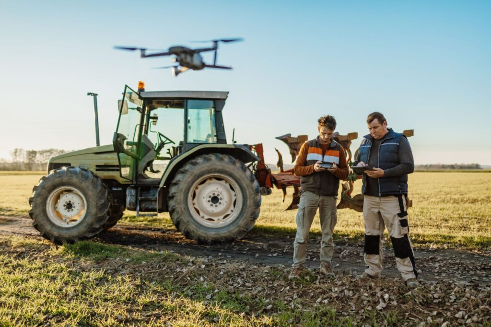
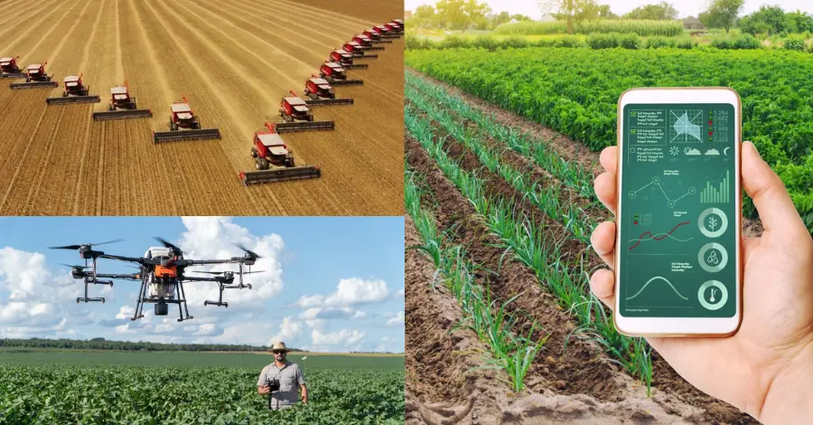

Agricultura moderna é um conjunto de práticas inovadoras que resultam em maior produção rural. Exemplos são
a adoção do plantio mecanizado, do sistema de irrigação por gotejamento e das simulações estatísticas que avaliam
se uma área é propícia para determinado plantio.
O que é Agricultura moderna?
Definimos brevemente o termo na introdução, mas vale sempre aprofundar, não é mesmo? Agricultura moderna faz uma leitura das necessidades e desejos atuais da produção agrícola, refletindo em inovação tecnológica, sustentabilidade e outros aspectos.
Pense assim: a agricultura tradicional focava essencialmente em prover segurança alimentar para as pessoas e os animais de um pequeno grupo. Com o tempo, a agricultura ganhou múltiplas funções e, entre as características deste novo modelo, existem o uso de produtos biológicos, aspectos de sustentabilidade, integração de tecnologias que facilitam a tomada de decisão a campo para o produtor rural etc.
Inclusive, hoje, ela está ligada, por exemplo, ao turismo, com iniciativas como Projeto Experiências do Brasil Rural, visando desenvolver produtos da agricultura familiar. Outro destaque vai para o desenvolvimento energético, como o biodiesel, que tem origem vegetal. Logo, para se alinhar a todas essas demandas, foi preciso modernizar o segmento.
Assim, um dos pontos principais da agricultura moderna é não visar unicamente ao desenvolvimento econômico, mas aos aspectos culturais e sociais envolvidos no processo, trabalhando com tecnologias, aumentando a eficiência nos processos e mantendo pessoas no campo.
Como surgiu a Agricultura Moderna?
A agricultura moderna surge pela percepção de que o modelo anterior de produção agrícola vem se tornando menos eficiente em médio e longo prazos. Inclusive, já existem muitos sinais disso, emitidos a partir das quedas de produtividades devido às formas convencionais de produção, originadas por problemas advindos da utilização do solo de forma intensiva, gerando processos erosivos frequentes e queda brusca da fertilidade.
O despertar para a necessidade de mudança, em busca da agricultura moderna, intensificou-se entre os anos de 1960 e 1970. Nesse período, a rápida urbanização e o crescimento econômico elevaram a demanda por matérias-primas.
Com isso, percebeu-se a necessidade de modernizar a maneira como a produção agrícola ocorria. Então, a estratégia desenvolvida foi o maior investimento em ciência e tecnologia. Ou seja, a agricultura moderna surgiu da preocupação de evitar a futura escassez de recursos naturais e gerar maiores eficiências nos tratos culturais e gerenciamento da produção.

Quais são os benefícios da agricultura moderna?
Conforme mencionamos, o conceito de agricultura moderna surge alinhado às necessidades do mundo atual, como maior cuidado com o meio ambiente e as questões sociais.
Entenda melhor sobre os benefícios das práticas a seguir!
Uso sustentável de recursos naturais
A produção agrícola depende do desenvolvimento sustentável, que visa garantir o uso mais saudável dos recursos naturais, utilizando com eficiência as operações de tratos culturais, garantindo a aplicação da quantidade exata de insumos no momento certo da cultura.
Dessa forma, torna-se possível realizar as operações de forma mais eficaz, garantindo o mantimento da qualidade do solo, água e clima, não os comprometendo ao longo do cultivo.
Redução de custos
Para realizar a adoção das estratégias da agricultura moderna, produtores rurais precisam fazer investimentos iniciais nas tecnologias e em novos produtos.
Por exemplo, a utilização de manejos de controle de pragas e doenças, por meio do mesmo princípio ativo e realizado de forma sucessiva, favorece o aparecimento da resistência doenças nas plantações, associada à falta de nutrientes adequados no solo. Logo, parte da produção pode ser perdida pelas pragas surgidas e pela criação da resistência à utilização de produtos químicos frequentemente utilizados. Além disso, é necessário um maior investimento em fertilizantes e outras estratégias de combate às doenças nas plantações.
Caso as iniciativas de controle não sejam aplicadas de forma eficiente, os gastos para supressão das pragas e doenças só tendem a crescer, se com eles não houver a adoção da agricultura moderna. Isso porque as patologias citadas costumam ser frutos de vírus e bactérias que se fortalecem com o tempo. É o caso da cebola, que pode ser atacada por sapeca ou mosaico em faixa, ou podridão mole.
Nesse sentido, a agricultura moderna ajuda a reduzir custos da produção agrícola por reduzir a necessidade de uso de insumos de forma intensiva ao longo da cultura, propiciando aplicações localizadas e no momento certo. Além disso, esse novo modelo ajuda a desenvolver versões mais econômicas e eficazes de insumos, como os naturais (aparas de relva, por exemplo.) E, ainda, a agricultura moderna conta com a estratégia de plantas de cobertura, que cobrem o solo para servir de adubo verde.
Diminuição na emissão de gases
A emissão de gases na atmosfera, fruto da atividade humana, prejudica diretamente a produção agrícola. Além disso, a qualidade de vida das pessoas é afetada, refletida no aumento de doenças respiratórias. E essa é a causa de 7 milhões de mortes anuais por conta da poluição atmosférica, segundo a Organização Mundial de Saúde (OMS).
Então, a agricultura moderna é benéfica, entre outros motivos, por diminuir ou compensar a emissão de gases por qualquer operação humana. Nesse sentido, uma forma de propor soluções que reduzam a liberação de metano é oferecer alimentos menores fibrosos e mais digestivos aos animais.
Melhoria na qualidade e na lucratividade
Você já entendeu que, na agricultura moderna, existe a busca por lucratividade do produtor rural em harmonia com a utilização de insumos, recursos naturais e tecnologias que facilitem operações e tomadas de decisões. Dessa forma, torna-se assertiva a garantia de uma produção agrícola melhor.
A inovação tecnológica trazida com a agricultura moderna, como técnicas de plantas de cobertura e fertilizantes naturais, eleva a qualidade da produção. Além disso, a intensa pesquisa de novas espécies e cultivares proporciona o melhoramento genético de algumas espécies, que facilitam e potencializam o cultivo.
Outros exemplos são o surgimento do plantio mecanizado, uso do monitoramento remoto, GPS agrícola e plantio linha a linha, sobre os quais falaremos adiante. Todas essas tendências ajudam o produtor rural a melhorar a qualidade das culturas e a aumentar a lucratividade.
Como a agricultura moderna contribui para o acompanhamento do clima e da safra?
Outras funcionalidades e benefícios da agricultura moderna envolvem o acompanhamento do clima e da safra.
Entenda como a tecnologia no agro é uma aliada nesse sentido!
Zarc
Uma maneira de acompanhar o clima e a possibilidade de início de uma nova safra de acordo com a época de plantio é por meio do programa Zoneamento Agrícola de Risco Climático (Zarc). Nesse sentido, fica a dica: conheça o simulador de plantio do Broto, que se baseia integralmente nesse zoneamento.
O Zarc é efetuado por uma série de técnicos e pesquisadores especializados em simulações matemáticas e análise de dados. Dessa forma, é possível analisar características da cultura a ser implantada, clima, solo, água, sistema de produção e muito mais.
As informações obtidas por meio dessa investigação criam um panorama das melhores culturas para serem plantadas em determinado local e período do ano, de acordo com a disponibilidade hídrica, temperatura, tipo de solo e cultivar. Do mesmo modo, também ajudam o agricultor a compreender a viabilidade técnica da implantação de determinado plantio vegetal e quais plantações podem ter sua produtividade prejudicada pela ação do clima na região e em determinadas épocas do ano.
Ferramentas tecnológicas
Existem, também, outras estratégias da agricultura moderna úteis para monitorar o clima e a safra. Entre elas, o já citado monitoramento remoto, que acompanha produções agrícolas com auxílio de drones e satélites, responsáveis pela monitoria em tempo real, desde o plantio.
Assim, se houver deficiência nutricional ou outro problema com a produção, os produtores rurais são alertados para tomar as providências. Percebe como essa também é uma maneira de melhorar a qualidade, a lucratividade da safra, auxiliar o produtor na tomada de decisão e mitigar possíveis quedas produtivas?
Outra estratégia de agricultura moderna que acompanha o clima e a safra é o GPS agrícola. Ele constrói mapas de produção para planejar e monitorar precisamente áreas do campo, possibilitando que o insumo seja colocado na dosagem certa e no local correto. O plantio linha a linha é outro exemplo, já que consiste em um motor elétrico capaz de controlar a dosagem de sementes.
A Internet das Coisas (IoT), que conecta itens usados no dia a dia com computadores, também auxilia no monitoramento climático. Um exemplo de aplicação são estações meteorológicas locais equipadas com sensores que registram em tempo real dados sobre solo, luminosidade e direção do vento. Assim, essas informações ficam armazenadas, podendo notificar os produtores rurais.
Quais são os desafios da agricultura moderna?
Mesmo com os benefícios, a agricultura moderna lida com desafios de elevar a lucratividade, garantir a qualidade de vida do produtor rural e muito mais. Acompanhe a seguir e entenda com mais detalhes os obstáculos existentes.
Difusão de tecnologia
Cerca de 67% das propriedades agrícolas brasileiras adotam algum tipo de inovação tecnológica, de acordo com Comissão Brasileira de Agricultura de Precisão e Digital (CBAPD). Em outras palavras, ainda há um longo caminho pela frente no sentido de aprimorar técnicas produtivas por meio da tecnologia.
Essa mudança também é importante porque a implementação da agricultura moderna contribui com o menor custo produtivo e melhores preços de venda. No entanto, a baixa difusão de tecnologias a campo e o baixo conhecimento dos produtores rurais sobre o diferencial tecnológico das soluções ainda são desafios para a difusão de tecnologia no campo.
Diante disso, caso esses obstáculos não sejam solucionados, a tendência é que haja uma concentração da produção agrícola nas mãos de poucos. Isso afeta diretamente o produtor rural e o consumidor. Afinal, deve lidar com preços cada vez mais elevados, pela falta de disputa no segmento.
Produção sustentável
O aumento da demanda por alimentos ao longo dos anos e a adoção de modelos de produção intensivos levaram à adoção de práticas efetivas, mas que tiveram queda de eficiência com o passar do tempo e que levaram à utilização de recursos naturais de forma intensa.
Diante disso, a agricultura moderna deve superar as quedas de eficiências e trazer assertividade nos manejos empregados na lavoura. Nesse sentido, a utilização de insumos biológicos, controle biológico de pragas, diminuição do uso de produtos químicos, estratégias de conservação de solo ao longo dos cultivos e busca por tecnologias de gerenciamento, entre outras, são práticas muito bem-vindas.
Isso porque unem diferentes conceitos agronômicos e mecanismos de controle que visam utilizar de forma diversa e eficiente os recursos disponíveis no ambiente. Outra opção para a produção sustentável são integrações dos sistemas produtivos, unindo atividades florestais, pecuárias e agrícolas, conforme a viabilidade econômica, adequação ambiental e valorização do indivíduo. No entanto, esses sistemas citados são dinâmicos, exigindo pesquisas científicas e tecnológicas atualizadas.
Além disso, é preciso que os produtores rurais sejam treinados para aproveitar o máximo do potencial desses sistemas de integração. Afinal, o desenvolvimento sustentável é uma exigência internacional, que pode favorecer a vantagem competitiva e a exportação de produtos.
Como os produtores rurais devem se adaptar ao uso de novas tecnologias?
Para aproveitar os benefícios da agricultura moderna e driblar os desafios existentes, os produtores devem se adaptar ao uso de novas tecnologias.
Para atingir esse objetivo, é importante aprofundar pesquisas que intensifiquem o progresso tecnológico. Além disso, é preciso que os recursos tecnológicos, úteis na agricultura moderna, sejam amplamente divulgados aos agricultores e implementados junto aos mesmos.
Junto à divulgação, é necessário que eles sejam adequadamente preparados para utilizar tais inovações. Caso contrário, os benefícios delas não serão capilarizados para todos os produtores em território nacional.
Tudo isso é facilitado com o maior desenvolvimento de políticas públicas preocupadas com essas questões. Entre elas, o desenvolvimento de legislações para estimular e esclarecer o manejo de ferramentas tecnológicas.
Como você viu por aqui, a agricultura moderna veio para otimizar a produção agrícola, conforme as demandas atuais de exportação e dos consumidores, cada vez mais atentos a práticas sustentáveis no agro. Além disso, pode proporcionar melhor qualidade nas culturas, eficiência em seus cultivos e mais lucratividade para você, produtor.